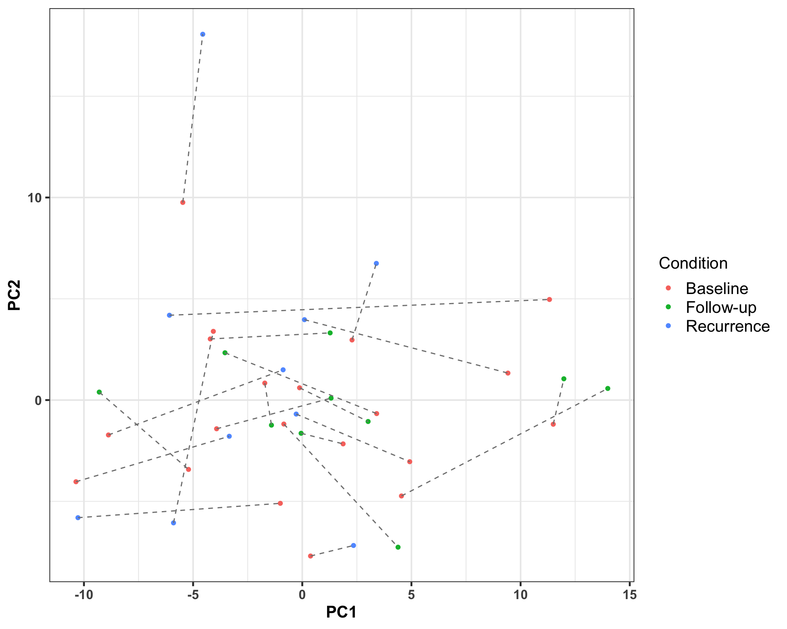

Preprocessing: Method development lung cancer patient cohort
Qian-Wu Liao
Last updated: 2023-04-26
Checks: 6 1
Knit directory:
SMART-CARE_LungCancer_MethodDev/
This reproducible R Markdown analysis was created with workflowr (version 1.7.0). The Checks tab describes the reproducibility checks that were applied when the results were created. The Past versions tab lists the development history.
Great! Since the R Markdown file has been committed to the Git repository, you know the exact version of the code that produced these results.
Great job! The global environment was empty. Objects defined in the global environment can affect the analysis in your R Markdown file in unknown ways. For reproduciblity it’s best to always run the code in an empty environment.
The command set.seed(20230425) was run prior to running
the code in the R Markdown file. Setting a seed ensures that any results
that rely on randomness, e.g. subsampling or permutations, are
reproducible.
Great job! Recording the operating system, R version, and package versions is critical for reproducibility.
Nice! There were no cached chunks for this analysis, so you can be confident that you successfully produced the results during this run.
Using absolute paths to the files within your workflowr project makes it difficult for you and others to run your code on a different machine. Change the absolute path(s) below to the suggested relative path(s) to make your code more reproducible.
| absolute | relative |
|---|---|
| /Users/qianwu/Desktop/SMART-CARE_LungCancer_MethodDev | . |
Great! You are using Git for version control. Tracking code development and connecting the code version to the results is critical for reproducibility.
The results in this page were generated with repository version d8a6936. See the Past versions tab to see a history of the changes made to the R Markdown and HTML files.
Note that you need to be careful to ensure that all relevant files for
the analysis have been committed to Git prior to generating the results
(you can use wflow_publish or
wflow_git_commit). workflowr only checks the R Markdown
file, but you know if there are other scripts or data files that it
depends on. Below is the status of the Git repository when the results
were generated:
Ignored files:
Ignored: .DS_Store
Ignored: analysis/.DS_Store
Ignored: code/.DS_Store
Ignored: data/.DS_Store
Untracked files:
Untracked: code/about.Rmd
Untracked: code/feature_selection.Rmd
Untracked: code/license.Rmd
Untracked: code/misc.R
Untracked: code/mofa_downstream_analysis.Rmd
Untracked: code/mofa_factors_investigation.Rmd
Untracked: code/workflowr_commands.R
Untracked: data/AG_Hell/
Untracked: data/AG_Hopf/
Untracked: data/AG_Krijgsveld/
Untracked: data/corrMetaPlasmaRes_Hopf_Hell.rds
Untracked: data/corrMetaTissueRes_Hopf_Hell.rds
Untracked: data/mofa/
Unstaged changes:
Deleted: analysis/about.Rmd
Deleted: analysis/license.Rmd
Note that any generated files, e.g. HTML, png, CSS, etc., are not included in this status report because it is ok for generated content to have uncommitted changes.
These are the previous versions of the repository in which changes were
made to the R Markdown
(analysis/preprocessing_targeted_DDA.Rmd) and HTML
(docs/preprocessing_targeted_DDA.html) files. If you’ve
configured a remote Git repository (see ?wflow_git_remote),
click on the hyperlinks in the table below to view the files as they
were in that past version.
| File | Version | Author | Date | Message |
|---|---|---|---|---|
| html | 0bbd8eb | LiaoQianWu | 2023-04-25 | Build site. |
| Rmd | e54886f | LiaoQianWu | 2023-04-25 | Finalize scripts about data preprocessing, preliminary analysis, comparisons between targeted and untargeted |
Description: Preprocess Tissue and Plasma Targeted Metabolomics data generated by AG Hell and Tissue and Plasma DDA Proteomics from AG Krijgsveld, which includes data cleansing, data normalization, and in the end, storing all needed information of each dataset (4 in total) in SummarizedExperiment objects for further analyses.
Load libraries
library('readxl')
library('vsn')
library('pwr')
library('SummarizedExperiment')
library('tidyverse')
# Load user-defined functions
source('./code/misc.R')Plasma Metabolomics
metaPlasmaTab <- readxl::read_excel(
'./data/AG_Hell/Thorax cohort_not-normalized_subset plasma.xlsx',
skip = 1) %>%
filter(!is.na(parents)) %>%
dplyr::select(-c(Sample_identification_cut, parents)) %>%
rename(Sample = 'patients_tissue',
Patient = 'Individual_ID',
Condition = 'Status',
Identifier = 'Sample Identification') %>%
pivot_longer(cols = -c('Sample', 'Patient', 'Condition', 'Identifier'),
names_to = 'metabolites',
values_to = 'Abundance') %>%
mutate(Abundance = as.numeric(Abundance))
# Unify condition annotations for Plasma Proteomics and Metabolomics
newCondition <- metaPlasmaTab$Condition
newCondition[which(newCondition == 'BASELINE_SURGERY')] <- 'Baseline'
newCondition[which(newCondition == 'FOLLOW-UP')] <- 'Follow-up'
newCondition[which(newCondition == 'RECURRENCE')] <- 'Recurrence'
metaPlasmaTab$Condition <- newCondition
# Extract patient cancer recurrences information
recurAnno <- readxl::read_excel(
'./data/AG_Hell/Thorax cohort_not-normalized_subset plasma.xlsx',
skip = 1) %>%
filter(!is.na(parents)) %>%
dplyr::select(c(Individual_ID, Status)) %>%
dplyr::rename(Patient = 'Individual_ID',
Condition = 'Status') %>%
dplyr::filter(Condition != 'BASELINE_SURGERY') %>%
dplyr::mutate(Recurrence = dplyr::case_when(
Condition == 'FOLLOW-UP' ~ 'No',
Condition == 'RECURRENCE' ~ 'Yes'
)) %>%
dplyr::select(-Condition)
# Add cancer recurrence information into annotation table
metaPlasmaTab <- left_join(metaPlasmaTab, recurAnno, by = 'Patient')
metaPlasma <- df2SummExp(metaPlasmaTab, row_id = 'metabolites', col_id = 'Sample',
values = 'Abundance', col_anno = c('Condition', 'Patient',
'Recurrence', 'Identifier'))Display dimensions of processed data (40 samples and 630 features)
dim(metaPlasma)[1] 630 40View and analyze processed data
Display distribution of original data
metaPlasma4Plot <- summExp2df(metaPlasma, assay = 'Abundance',
row_id = 'metabolites', col_id = 'Sample')
ggplot(metaPlasma4Plot, aes(x=Sample, y=Value)) +
geom_boxplot() +
scale_y_log10() +
xlab('Sample IDs') + ylab('Metabolite abundance') +
theme(axis.text.x = element_text(angle = 90, vjust = 0.5, hjust = 1))
| Version | Author | Date |
|---|---|---|
| 0bbd8eb | LiaoQianWu | 2023-04-25 |
# Zero-valued data points are removed.Perform VSN
Perform VSN (variance stabilizing normalization) on original data
exprMat <- as.matrix(assay(metaPlasma))
fit <- vsnMatrix(exprMat)
metaPlasmaNorm <- metaPlasma
assay(metaPlasmaNorm) <- predict(fit, exprMat)
# saveRDS(metaPlasmaNorm, './data/AG_Hell/metaPlasmaNorm.rds')
metaPlasmaNorm4Plot <- summExp2df(metaPlasmaNorm, assay = 'Abundance',
row_id = 'metabolites', col_id = 'Sample')
ggplot(metaPlasmaNorm4Plot, aes(x=Sample, y=Value)) +
geom_boxplot() +
theme(axis.text.x = element_text(angle = 90, vjust = 0.5, hjust = 1))
| Version | Author | Date |
|---|---|---|
| 0bbd8eb | LiaoQianWu | 2023-04-25 |
Perform PCA
Use only top 100 metabolites that have high variance
exprMat <- assay(metaPlasmaNorm)
sd <- rowSds(exprMat)
exprMatSub <- exprMat[order(sd, decreasing = TRUE)[1:100],]
resPC <- prcomp(t(exprMatSub), center = TRUE, scale. = FALSE)
anno <- distinct(metaPlasmaTab, Sample, Patient, Condition)
metaPlasmaNorm4Plot <- resPC$x[,1:10] %>%
as.data.frame() %>%
rownames_to_column('Sample') %>%
left_join(anno, by = 'Sample')
ggplot(metaPlasmaNorm4Plot, aes(x=PC1, y=PC2, col=Condition, group=Patient)) +
geom_point() +
geom_line(col = 'grey50', linetype = 'dashed')
| Version | Author | Date |
|---|---|---|
| 0bbd8eb | LiaoQianWu | 2023-04-25 |
Use all metabolites
resPC2 <- prcomp(t(exprMat), center = TRUE, scale. = FALSE)
metaPlasmaNorm4Plot2 <- resPC2$x[, 1:10] %>%
as.data.frame() %>%
rownames_to_column('Sample')%>%
left_join(anno, by = 'Sample')
ggplot(metaPlasmaNorm4Plot2, aes(x=PC1, y=PC2, col=Condition, group=Patient)) +
geom_point() +
geom_line(col = 'grey50', linetype = 'dashed')
| Version | Author | Date |
|---|---|---|
| 0bbd8eb | LiaoQianWu | 2023-04-25 |
Tissue Metabolomics
metaTissueTab <- readxl::read_excel(
'./data/AG_Hell/Thorax cohort_not-normalized_subset tissue.xlsx',
skip = 1) %>%
dplyr::filter(!is.na(parents)) %>%
dplyr::select(-c(Sample_identification_cut, parents)) %>%
dplyr::rename(Sample = patients_tissue,
Patient = Individual_ID,
Condition = Status,
Identifier = `Sample Identification`) %>%
tidyr::pivot_longer(cols = -c('Sample', 'Patient', 'Condition', 'Identifier'),
names_to = 'metabolites', values_to = 'Abundance') %>%
dplyr::mutate(Abundance = as.numeric(Abundance))
# Unify condition annotations for Tumor proteomics and metabolomics
newCondition <- metaTissueTab$Condition
newCondition[which(newCondition == 'Normalgewebe')] <- 'Normal'
newCondition[which(newCondition == 'Tumorgewebe')] <- 'Tumor'
metaTissueTab$Condition <- newCondition
# Add cancer recurrence information into annotation table
metaTissueTab <- dplyr::left_join(metaTissueTab, recurAnno, by = 'Patient')
metaTissue <- df2SummExp(metaTissueTab, row_id = 'metabolites', col_id = 'Sample',
values = 'Abundance', col_anno = c('Condition', 'Patient',
'Recurrence', 'Identifier'))Display dimensions of processed data (40 samples and 630 features)
dim(metaTissue)[1] 630 40Display 3 NA data points in this dataset
dplyr::filter(metaTissueTab, is.na(Abundance)) %>%
dplyr::select(-Identifier)# A tibble: 3 × 6
Sample Patient Condition metabolites Abundance Recurrence
<chr> <chr> <chr> <chr> <dbl> <chr>
1 HH3U27K2_TG HH3U27K2 Tumor Ala NA No
2 F04ERF3M_TG F04ERF3M Tumor Histamine NA Yes
3 E04NMF53_TG E04NMF53 Tumor Histamine NA Yes # Values of these data points were infinite (character) before converting them to
# numeric class.View and analyze processed data
Display distribution of original data
metaTissue4Plot <- summExp2df(metaTissue, assay = 'Abundance',
row_id = 'metabolites', col_id = 'Sample')
ggplot(metaTissue4Plot, aes(x=Sample, y=Value)) +
geom_boxplot() +
scale_y_log10() +
xlab('Sample ID') + ylab('Metabolite abundance') +
theme(axis.text.x = element_text(angle = 90, vjust = 0.5, hjust = 1))
| Version | Author | Date |
|---|---|---|
| 0bbd8eb | LiaoQianWu | 2023-04-25 |
# There are 3 NA data points and 756 zeros.Perform VSN
exprMat <- as.matrix(assay(metaTissue))
fit <- vsnMatrix(exprMat)
metaTissueNorm <- metaTissue
assay(metaTissueNorm) <- predict(fit, exprMat)
# saveRDS(metaTissueNorm, './data/AG_Hell/metaTissueNorm.rds')
metaTissueNorm4Plot <- summExp2df(metaTissueNorm, assay = 'Abundance',
row_id = 'metabolites', col_id = 'Sample')
ggplot(metaTissueNorm4Plot, aes(x=Sample, y=Value)) +
geom_boxplot() +
xlab('Sample IDs') + ylab('Metabolite abundance') +
theme(axis.text.x = element_text(angle = 90, vjust = 0.5, hjust = 1))
| Version | Author | Date |
|---|---|---|
| 0bbd8eb | LiaoQianWu | 2023-04-25 |
Perform PCA
Use only top 100 metabolites that have high variance
exprMat <- assay(metaTissueNorm)
# Remove the metabolites containing non-applicable values (try to impute the
# missing values later)
exprMat <- exprMat[which(rownames(exprMat) != c('Ala', 'Histamine')),]
sd <- rowSds(exprMat)
exprMatSub <- exprMat[order(sd, decreasing = TRUE)[1:100],]
resPC <- prcomp(t(exprMatSub), center = TRUE, scale. = FALSE) # Each row is an
# observation, i.e., samples
anno <- dplyr::distinct(metaTissueTab, Sample, Patient, Condition)
metaTissueNorm4Plot <- resPC$x[, 1:10] %>%
as.data.frame() %>%
tibble::rownames_to_column('Sample') %>%
dplyr::left_join(anno, by = 'Sample')
ggplot(metaTissueNorm4Plot, aes(x=PC1, y=PC2, col=Condition, group=Patient)) +
geom_point() +
geom_line(col = 'grey50', linetype = 'dashed')
| Version | Author | Date |
|---|---|---|
| 0bbd8eb | LiaoQianWu | 2023-04-25 |
Use all metabolites except those three containing missing values
resPC2 <- prcomp(t(exprMat), center = TRUE, scale. = FALSE)
metaTissueNorm4Plot2 <- resPC2$x[, 1:10] %>%
as.data.frame() %>%
tibble::rownames_to_column('Sample') %>%
dplyr::left_join(anno, by = 'Sample')
ggplot(metaTissueNorm4Plot2, aes(x=PC1, y=PC2, col=Condition, group=Patient)) +
geom_point() +
geom_line(col = 'grey50', linetype = 'dashed')
| Version | Author | Date |
|---|---|---|
| 0bbd8eb | LiaoQianWu | 2023-04-25 |
Plasma Proteomics
# Abundance data
proPlasmaTab <- readxl::read_excel(
'./data/AG_Krijgsveld/20211119_133842_20211018_TMMS_TRX_plasma_Report.xlsx',
sheet = 1) %>%
dplyr::select(PG.Genes, PG.ProteinGroups, contains('oecf4')) %>%
pivot_longer(cols = -c('PG.Genes', 'PG.ProteinGroups'),
names_to = 'Sample_IDs',
values_to = 'Abundance') %>%
mutate(Abundance = as.numeric(Abundance)) %>%
group_by(PG.Genes, PG.ProteinGroups, Sample_IDs) %>%
summarise(Abundance = mean(Abundance, na.rm = TRUE)) %>%
ungroup() %>%
filter(!is.na(Abundance))
# Column PG.ProteinGroups has no overlap and column PG.Genes has few overlaps (NA:5).# Sample conditions of 'LH32F07U_P_R' and 'E04NMF53_P_R' were not recorded (follow-up
# or recurrence), yet, annotations can be recovered according to Plasma Metabolomics
# due to same patient cohort.
# Annotation data
proPlasmaAnno <- readxl::read_excel(
'./data/AG_Krijgsveld/20211119_133842_20211018_TMMS_TRX_plasma_Report.xlsx',
sheet = 2) %>%
dplyr::select(Sample_IDs, Condition, parents, Identifier) %>%
mutate(id = paste0('smp', seq(nrow(.))),
Patient = str_remove_all(parents, '/THRX_SPACE/THRX_DB/SC_T_S_|_P_B|_P_R'),
Sample = str_remove(parents, '/THRX_SPACE/THRX_DB/SC_T_S_'),
Identifier = str_remove(parents, '/THRX_SPACE/THRX_DB/'))
# Unify plasma annotations for Plasma Proteomics and Metabolomics
newCondition <- proPlasmaAnno$Condition
newCondition[which(newCondition == 'Pretherapeutic')] <- 'Baseline'
newCondition[which(proPlasmaAnno$Sample == 'LH32F07U_P_R')] <- 'Follow-up'
newCondition[which(proPlasmaAnno$Sample == 'E04NMF53_P_R')] <- 'Recurrence'
proPlasmaAnno$Condition <- newCondition
# Add cancer recurrence information into annotation table
proPlasmaAnno <- left_join(proPlasmaAnno, recurAnno, by = 'Patient')Show dimensions of processed data (40 samples and 435 features)
proPlasmaTab <- left_join(proPlasmaTab, proPlasmaAnno, by = 'Sample_IDs')
proPlasma <- df2SummExp(proPlasmaTab, row_id = 'PG.ProteinGroups', col_id = 'id',
values = 'Abundance', row_anno = 'PG.Genes',
col_anno = c('Condition', 'Sample_IDs', 'Patient',
'Sample', 'Recurrence', 'Identifier'))
dim(proPlasma)[1] 435 40View and analyze processed data
Display distribution of original data
proPlasma4Plot <- summExp2df(proPlasma, assay = 'Abundance',
row_id = 'PG.ProteinGroups', col_id = 'id')
ggplot(proPlasma4Plot, aes(x=id, y=Value)) +
geom_boxplot() +
scale_y_log10() +
xlab('Sample ID') + ylab('Protein Abundance') +
theme(axis.text.x = element_text(angle = 90, vjust = 0.5, hjust = 1))
| Version | Author | Date |
|---|---|---|
| 0bbd8eb | LiaoQianWu | 2023-04-25 |
perform VSN
exprMat <- as.matrix(assay(proPlasma))
fit <- vsnMatrix(exprMat)
proPlasmaNorm <- proPlasma
assay(proPlasmaNorm) <- predict(fit, exprMat)
# saveRDS(proPlasmaNorm, './data/AG_Krijgsveld/proPlasmaNorm.rds')
proPlasmaNorm4Plot <- summExp2df(proPlasmaNorm, assay = 'Abundance',
row_id = 'PG.ProteinGroups', col_id = 'id')
ggplot(proPlasmaNorm4Plot, aes(x=id, y=Value)) +
geom_boxplot() +
xlab('Sample ID') + ylab('Protein Abundance') +
theme(axis.text.x = element_text(angle = 90, vjust = 0.5, hjust = 1))
| Version | Author | Date |
|---|---|---|
| 0bbd8eb | LiaoQianWu | 2023-04-25 |
Perform PCA
exprMat <- assay(proPlasmaNorm)
resPC <- prcomp(t(exprMat), center = TRUE, scale. = FALSE)
anno <- dplyr::distinct(proPlasmaTab, id, Patient, Condition)
proPlasmaNorm4Plot <- resPC$x[, 1:10] %>%
as.data.frame() %>%
tibble::rownames_to_column('id') %>%
dplyr::left_join(anno, by = 'id')
ggplot(proPlasmaNorm4Plot, aes(x=PC1, y=PC2, col=Condition, group=Patient)) +
geom_point() +
geom_line(col = 'grey50', linetype = 'dashed')
| Version | Author | Date |
|---|---|---|
| 0bbd8eb | LiaoQianWu | 2023-04-25 |
Tissue Proteomics
# Abundance data
proTissueTab <- readxl::read_excel(
'./data/AG_Krijgsveld/20211119_151605_20211104_TMMS_Tissue_Report.xlsx',
sheet = 1) %>%
dplyr::select(PG.Genes, PG.ProteinGroups, contains('oecf4')) %>%
# Convert messy data to tidy table
tidyr::pivot_longer(cols = -c('PG.Genes', 'PG.ProteinGroups'),
names_to = 'Sample_IDs',
values_to = 'Abundance') %>%
dplyr::mutate(Abundance = as.numeric(Abundance)) %>%
dplyr::group_by(PG.Genes, PG.ProteinGroups, Sample_IDs) %>%
# Determine a single numeric value for a protein of a sample if multiple
# identical protein measures of a sample exist
dplyr::summarise(Abundance = mean(Abundance, na.rm = TRUE)) %>%
dplyr::ungroup() %>%
dplyr::filter(!is.na(Abundance))
# Column PG.ProteinGroups has no overlap and column PG.Genes has few overlaps (
# TMPO:2 and NA:5) because some genes can encode multiple protein isoforms through
# RNA splicing.
# 19 protein groups are not present in any samples (Abundance = NaN).# Annotation data
proTissueAnno <- readxl::read_excel(
'./data/AG_Krijgsveld/20211119_151605_20211104_TMMS_Tissue_Report.xlsx',
sheet = 2) %>%
dplyr::select(Sample_IDs, Condition, parents, Identifier) %>%
dplyr::mutate(id = paste0('smp', seq(nrow(.))),
Patient = str_remove_all(parents, '/THRX_SPACE/THRX_DB/SC_T_S_|_TG|_NG'),
Sample = str_remove(parents, '/THRX_SPACE/THRX_DB/SC_T_S_'),
Identifier = str_remove(Identifier, '/THRX_SPACE/'))
# Add cancer recurrence information into annotation table
proTissueAnno <- dplyr::left_join(proTissueAnno, recurAnno, by = 'Patient')Show dimensions of processed data (40 samples and 5193 features)
# Combine processed Abundance and annotation data
proTissueTab <- dplyr::left_join(proTissueTab, proTissueAnno, by = 'Sample_IDs')
# Convert tidy table to value matrix for further analysis
proTissue <- df2SummExp(proTissueTab, row_id = 'PG.ProteinGroups', col_id = 'id',
values = 'Abundance', row_anno = 'PG.Genes',
col_anno = c('Condition', 'Sample_IDs', 'Patient',
'Sample', 'Recurrence', 'Identifier'))
dim(proTissue)[1] 5193 40View and analyze processed data
View distribution of original data to see if there is technical noise
# Convert value matrix to long data for making plot
proTissue4Plot <- summExp2df(proTissue, assay = 'Abundance',
row_id = 'PG.ProteinGroups', col_id = 'id')
ggplot(proTissue4Plot, aes(x=id, y=Value)) +
geom_boxplot() +
scale_y_log10() +
xlab('Sample ID') + ylab('Protein abundance') +
theme(axis.text.x = element_text(angle = 90, vjust = 0.5, hjust = 1))
| Version | Author | Date |
|---|---|---|
| 0bbd8eb | LiaoQianWu | 2023-04-25 |
Perform VSN
exprMat <- as.matrix(assay(proTissue))
fit <- vsnMatrix(exprMat)
proTissueNorm <- proTissue
assay(proTissueNorm) <- predict(fit, exprMat)
# saveRDS(proTissueNorm, './data/AG_Krijgsveld/proTissueNorm.rds')
proTissueNorm4Plot <- summExp2df(proTissueNorm, assay = 'Abundance',
row_id = 'PG.ProteinGroups', col_id = 'id')
ggplot(proTissueNorm4Plot, aes(x=id, y=Value)) +
geom_boxplot() +
xlab('Sample ID') + ylab('Protein abundance') +
theme(axis.text.x = element_text(angle = 90, vjust = 0.5, hjust = 1))
| Version | Author | Date |
|---|---|---|
| 0bbd8eb | LiaoQianWu | 2023-04-25 |
Perform PCA
# prcomp()'s parameter *center* is set to TRUE (Check effects of parameters *center*
# and *scale.*)
exprMat <- assay(proTissueNorm)
sd <- rowSds(exprMat)
exprMatSub <- exprMat[order(sd, decreasing = TRUE)[1:1000],]
resPC <- prcomp(t(exprMatSub), center = TRUE, scale. = FALSE) # Each row is an
# observation, i.e., samples
anno <- dplyr::distinct(proTissueTab, id, Patient, Condition)
proTissueNorm4Plot <- resPC$x[, 1:10] %>%
as.data.frame() %>%
tibble::rownames_to_column('id') %>%
dplyr::left_join(anno, by = 'id')
ggplot(proTissueNorm4Plot, aes(x=PC1, y=PC2, col=Condition, group=Patient)) + #, label=id
# geom_text(hjust = 0, vjust = 0) +
geom_point() +
geom_line(col = 'grey50', linetype = 'dashed')
| Version | Author | Date |
|---|---|---|
| 0bbd8eb | LiaoQianWu | 2023-04-25 |
Patient “LH32F07U” has two tumor samples and one normal sample.
Patient “F04ERF3M” does not have a paired tumor sample.
It is very probably mislabeling. If not, check correlation between two
tumor samples from the same patient to get further idea.
Abundance comparisons
Tissue vs Plasma:
Investigate overall differences of Metabolomics and Proteomics abundance
between Tissue and Plasma samples
# Load normalized data
metaTissueNorm <- readRDS('./data/AG_Hell/metaTissueNorm.rds')
metaPlasmaNorm <- readRDS('./data/AG_Hell/metaPlasmaNorm.rds')
proTissueNorm <- readRDS('./data/AG_Krijgsveld/proTissueNorm.rds')
proPlasmaNorm <- readRDS('./data/AG_Krijgsveld/proPlasmaNorm.rds')Metabolomics
# Convert SummarizedExperiment objects to tables for plotting
# Tissue Metabolomics
metaTissueNorm4Plot <- summExp2df(metaTissueNorm, assay = 'Abundance',
row_id = 'Metabolites', col_id = 'Sample') %>%
dplyr::select(c('Metabolites', 'Sample', 'Value')) %>%
dplyr::mutate(Sample_type = 'Tissue', Sample = paste0('Tissue_', Sample))
# Plasma Metabolomics
metaPlasmaNorm4Plot <- summExp2df(metaPlasmaNorm, assay = 'Abundance',
row_id = 'Metabolites', col_id = 'Sample') %>%
dplyr::select(c('Metabolites', 'Sample', 'Value')) %>%
dplyr::mutate(Sample_type = 'Plasma', Sample = paste0('Plasma_', Sample))
# Concatenate two tables
metaTab4Plot <- rbind(metaTissueNorm4Plot, metaPlasmaNorm4Plot)
ggplot(metaTab4Plot, aes(x=Sample, y=Value, col=Sample_type)) +
geom_boxplot(width = 0.7) +
labs(y = 'Metabolite abundance', title = 'Metabolomics', col = 'Sample type') +
theme(axis.text.x = element_blank(), axis.ticks.x = element_blank())
| Version | Author | Date |
|---|---|---|
| 0bbd8eb | LiaoQianWu | 2023-04-25 |
# ggplot(metaTab4Plot, aes(x=Sample_type, y=Value, col=Sample_type)) +
# geom_boxplot() +
# labs(x = 'Sample type', y = 'Metabolite abundance', title = 'Metabolomics') +
# theme(legend.position = 'none') +
# ggpubr::stat_compare_means(method = 'wilcox.test', paired = F)
# When sample size is large, even minor differences are coming with highly significant
# p-values. Statistical meaningfulness does not equal biological meaningfulness.
# In this case, a complementary approach, effect size, should be reported.Proteomics
# Tissue Proteomics
# Deal with mislabeling
newSample <- colData(proTissueNorm)$Sample
newSample[22] <- 'F04ERF3M_TG'
colData(proTissueNorm)$Sample <- paste0('Tissue_', newSample)
proTissueNorm4Plot <- summExp2df(proTissueNorm, assay = 'Abundance',
row_id = 'PG.ProteinGroups', col_id = 'id') %>%
dplyr::select(c('PG.ProteinGroups', 'Sample', 'Value')) %>%
dplyr::mutate(Sample_type = 'Tissue')
# Plasma Proteomics
colData(proPlasmaNorm)$Sample <- paste0('Plasma_', colData(proPlasmaNorm)$Sample)
proPlasmaNorm4Plot <- summExp2df(proPlasmaNorm, assay = 'Abundance',
row_id = 'PG.ProteinGroups', col_id = 'id') %>%
dplyr::select(c('PG.ProteinGroups', 'Sample', 'Value')) %>%
dplyr::mutate(Sample_type = 'Plasma')
# Concatenate two tables
proTab4Plot <- rbind(proTissueNorm4Plot, proPlasmaNorm4Plot)
ggplot(proTab4Plot, aes(x=Sample, y=Value, col=Sample_type)) +
geom_boxplot(width = 0.7) +
labs(y = 'Protein abundance', title = 'Proteomics', col = 'Sample type') +
theme(axis.text.x = element_blank(), axis.ticks.x = element_blank())
| Version | Author | Date |
|---|---|---|
| 0bbd8eb | LiaoQianWu | 2023-04-25 |
# ggplot(proTab4Plot, aes(x=Sample_type, y=Value, col=Sample_type)) +
# geom_boxplot() +
# labs(x = 'Sample type', y = 'Protein abundance', title = 'Proteomics') +
# theme(legend.position = 'none') +
# ggpubr::stat_compare_means(method = 'wilcox.test', paired = F)The overall protein level of Tissue samples is higher than that of Plasma samples.
sessionInfo()R version 4.2.1 (2022-06-23)
Platform: aarch64-apple-darwin20 (64-bit)
Running under: macOS Ventura 13.2.1
Matrix products: default
BLAS: /Library/Frameworks/R.framework/Versions/4.2-arm64/Resources/lib/libRblas.0.dylib
LAPACK: /Library/Frameworks/R.framework/Versions/4.2-arm64/Resources/lib/libRlapack.dylib
locale:
[1] en_US.UTF-8/en_US.UTF-8/en_US.UTF-8/C/en_US.UTF-8/en_US.UTF-8
attached base packages:
[1] stats4 stats graphics grDevices utils datasets methods
[8] base
other attached packages:
[1] lubridate_1.9.2 forcats_1.0.0
[3] stringr_1.5.0 dplyr_1.1.1
[5] purrr_1.0.1 readr_2.1.4
[7] tidyr_1.3.0 tibble_3.2.1
[9] ggplot2_3.4.1 tidyverse_2.0.0
[11] SummarizedExperiment_1.26.1 GenomicRanges_1.48.0
[13] GenomeInfoDb_1.32.4 IRanges_2.30.1
[15] S4Vectors_0.34.0 MatrixGenerics_1.8.1
[17] matrixStats_0.63.0 pwr_1.3-0
[19] vsn_3.64.0 Biobase_2.56.0
[21] BiocGenerics_0.42.0 readxl_1.4.2
[23] workflowr_1.7.0
loaded via a namespace (and not attached):
[1] httr_1.4.5 sass_0.4.5 jsonlite_1.8.4
[4] bslib_0.4.2 getPass_0.2-2 BiocManager_1.30.20
[7] affy_1.74.0 highr_0.10 GenomeInfoDbData_1.2.8
[10] cellranger_1.1.0 yaml_2.3.7 pillar_1.9.0
[13] lattice_0.20-45 glue_1.6.2 limma_3.52.4
[16] digest_0.6.31 promises_1.2.0.1 XVector_0.36.0
[19] colorspace_2.1-0 htmltools_0.5.5 httpuv_1.6.9
[22] preprocessCore_1.58.0 Matrix_1.5-3 pkgconfig_2.0.3
[25] zlibbioc_1.42.0 scales_1.2.1 processx_3.8.0
[28] whisker_0.4.1 affyio_1.66.0 later_1.3.0
[31] tzdb_0.3.0 timechange_0.2.0 git2r_0.31.0
[34] farver_2.1.1 generics_0.1.3 cachem_1.0.7
[37] withr_2.5.0 cli_3.6.1 magrittr_2.0.3
[40] evaluate_0.20 ps_1.7.3 fs_1.6.1
[43] fansi_1.0.4 tools_4.2.1 hms_1.1.3
[46] lifecycle_1.0.3 munsell_0.5.0 DelayedArray_0.22.0
[49] callr_3.7.3 compiler_4.2.1 jquerylib_0.1.4
[52] rlang_1.1.0 grid_4.2.1 RCurl_1.98-1.10
[55] rstudioapi_0.14 labeling_0.4.2 bitops_1.0-7
[58] rmarkdown_2.21 gtable_0.3.3 DBI_1.1.3
[61] R6_2.5.1 knitr_1.42 fastmap_1.1.1
[64] utf8_1.2.3 rprojroot_2.0.3 stringi_1.7.12
[67] Rcpp_1.0.10 vctrs_0.6.1 tidyselect_1.2.0
[70] xfun_0.38